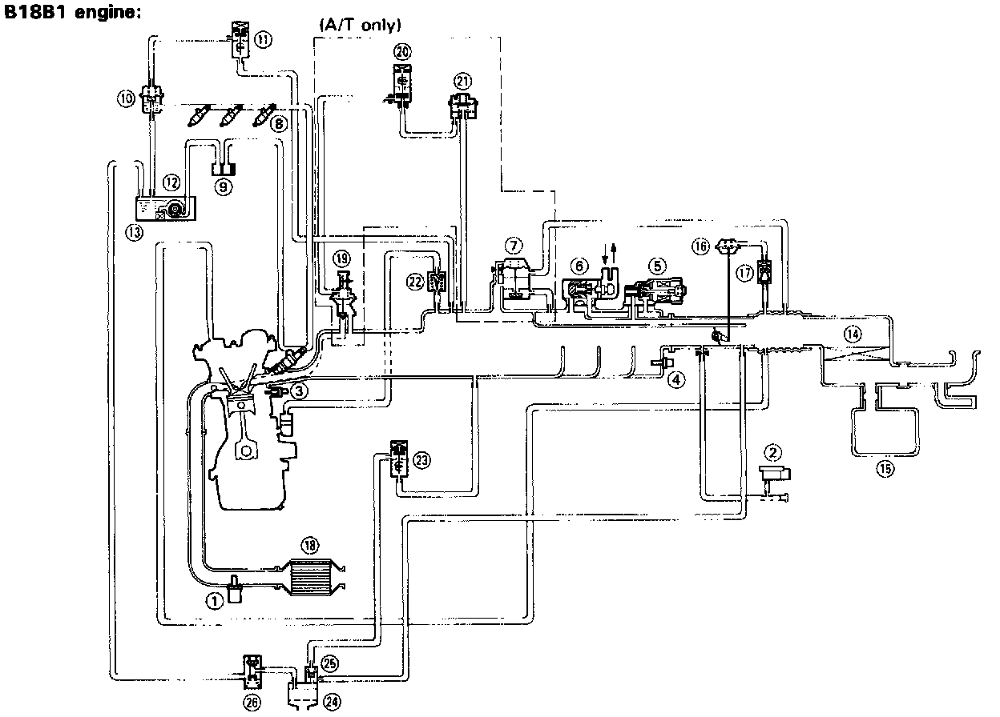

System Schematic Diagrams

(1) OXYGEN (02) SENSOR
(2) MANIFOLD ABSOLUTE PRESSURE (MAP) SENSOR
(3) COOLANT TEMPERATURE (TW) SENSOR
(4) INTAKE AIR TEMPERATURE (TA) SENSOR
(5) ELECTRONIC AIR CONTROL VALVE (EACV)
(6) FAST IDLE VALVE
(7) AIR BOOST VALVE (A/T only)
(8) FUEL INJECTOR
(9) FUEL FILTER
(10) PRESSURE REGULATOR
(11) PRESSURE REGULATOR CUT-OFF SOLENOID VALVE
(12) FUEL PUMP
(13) FUEL TANK
(14) AIR CLEANER
(15) RESONATOR
(16) DASHPOT DIAPHRAGM
(17) CHECK VALVE
(18) CATALYTIC CONVERTER
(19) EGR VALVE (A/T ONLY)
(20) EGR CONTROL SOLENOID VALVE (A/T ONLY)
(21) CONSTANT VACUUM CONTROL (CVC) VALVE
(A/T ONLY)
(22) PCV VALVE
(23) PURGE CONTROL SOLENOID VALVE
(24) CHARCOAL CANISTER
(25) PURGE CONTROL DIAPHRAGM VALVE
(26) TWO-WAY VALVE